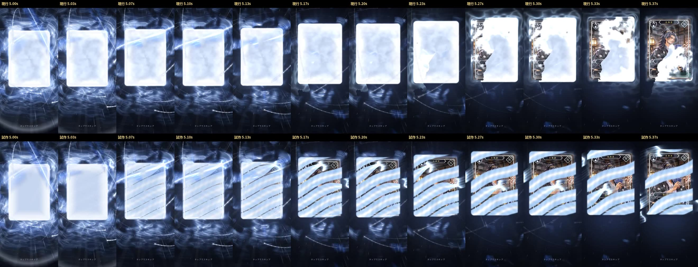
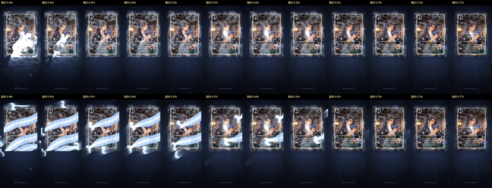

比較の動画・画像は、手動の時計で 30fps・1コマずつ描いたもの(390×844。同じ時刻で比べるため)。realtime-*.mp4 は PR #206 の録画ツールの実時間の録画(GPU なしの環境)。iPhone 実機ではない
音は仮(どちらも同じ。アプリと同じ予約の関数で書き出したものを重ねた)
同じビルドで ?peel=band を付けないときの映像は、n12 と全コマ完全一致(現行は変えていない)
データ: https://imasanori0111-jpn.github.io/-stack-poker-test-web/gacha-review-n13/frames.json
https://imasanori0111-jpn.github.io/-stack-poker-test-web/gacha-review-n13/n12-vs-band.mp4
https://imasanori0111-jpn.github.io/-stack-poker-test-web/gacha-review-n13/peel-slow.mp4


| n12 | {"art_visible_10pct_s": 5.33, "art_visible_50pct_s": 5.7, "art_visible_75pct_s": null, "white_peak_pct_during_peel": 21.3, "realtime_unique_fps": 22.4, "realtime_stalls_ge_0.12s": [[2.92, 3], [3.08, 3]], "white_peak_pct_whole": 11.8, "white_over50pct_seconds": 0.0} |
| band | {"art_visible_10pct_s": 5.23, "art_visible_50pct_s": 5.67, "art_visible_75pct_s": null, "white_peak_pct_during_peel": 5.7, "realtime_unique_fps": 21.2, "realtime_stalls_ge_0.12s": [[2.68, 3], [2.96, 3], [3.68, 5]], "white_peak_pct_whole": 3.1, "white_over50pct_seconds": 0.0} |